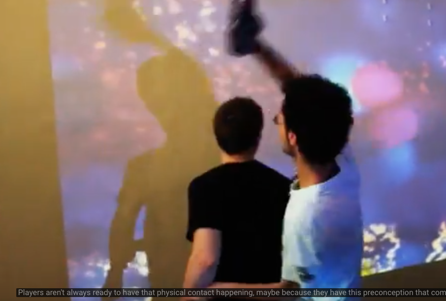
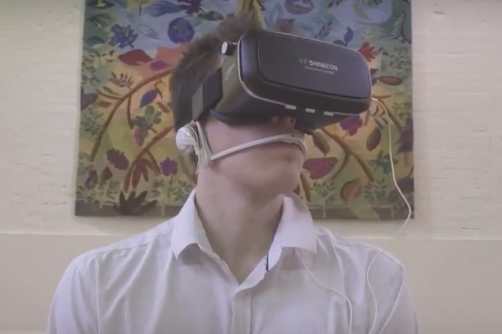

De opdracht is hier om een nieuw concept voor een extertion interface te bedenken om studenten en leraren binnen de HHS te laten bewegen. Ik vind zelf dat de beste manier is om mensen te laten bewegen is door het 'leuk' te maken. Het moet niet om het bewegen zelf gaan maar de beweging hoort bij de leuke activiteit. Ik zou hiervoor in de kantine beneden een competitie spel maken met een beloning, je lunch.
De student/medewerker staat voor een groot scherm, hierop wordt het spel gescreened. Dit kan door middel van een grote tv maar een witte muur//doek zou ook mogelijk zijn. De persoon staat hiervoor en wordt door middel van een camera opgenomen, denk hierbij aan het idee van een Kinect. De bewegingen van de persoon hebben effect op het spel. De persoon kiest de lunch uit die hij wilt winnen, bijvoorbeeld een banaan. Nu vallen er op het scherm bananen naar beneden maar ook andere dingen. De persoon moet zoveel mogelijk bananen 'pakken'. Hoe meer bananen, hoe hoger de score. Hierbij komt ook een leaderboard kijken, de persoon die aan het eind van de week op nummer 1 staat krijgt zijn gekozen lunch dan ook gratis. Het spel bestaat technisch dus uit een Kinect, een projector met een oppervlak waar dit op gescreend wordt en een Xbox/computer.
Als onderzoek heb ik als eerste voorbeeld de extertion game BubblePopper. Dit is een multiplayer game, voor twee personen. Je moet hier zoveel mogelijk 'bubbels' laten 'poppen' in 60 seconden. Ze laten een bel knallen door middel van hun augmented handschoen. Het bestaat uit een Wii remote, een projector, een laptop en de augmented handschoenen. Het gaat er bij dit spel vooral om dat er wordt getoond dat spellen die multiplayer zijn niet perse zittend achter een pc hoeven te zijn maar dat je nog steeds competatief een spel kan spelen terwijl je ook lichamelijke beweging hebt. Ik vind het idee achter dit spel en de bedoeling hiermee erg interessant, het mensen willen laten bewegen door middel van spel. Zelf denk ik niet dat dit iets is wat mensen gaan doen, totdat het echt 'vernieuwender' is dan de PC/PS4/XBOX games die er nu zijn. Het zou nog overtreffender dan dat moeten zijn om echt te kunnen aanslaan denk ik. Wel vind ik het een goed begin voor iets wat uit kan groeien tot meer.

Als tweede voorbeeld heb ik een extertion game die samengaat met VR, de Life Tree. Dit is in principe meer een oefening dan een spel en is voor 1 persoon bedoeld. Het doel van deze interface is om PLB,pursed-lip breathing, te oefenen voor 2 en een halve minuut. Het gaat er hier vooral om om mensen te helpen met ademen en hierdoor beter te kunnen mediteren. De VR bril helpt hier ook bij door middels animaties duidelijk te maken of een persoon uit ademt of niet. Zij krijgen dus feedback door middel van de VR bril. Door middel van goed ademen zal de dode boom, die zichtbaar is in VR, weer tot leven komen. Ook wordt er een 'breathing headset' gedragen waardoor de adem kan worden gemeten. Deze zit verbonden aan de VR bril en zo wordt de input dus getoond in VR. Ik vind dit een heel tof 'spel' omdat dit juist een hele andere kant op gaat. Hier gaat het echt om het helpen van mensen in plaats van de lol die hieraan zit. Ik vind dit een interessante kant om op te gaan met exterion interfaces. Iets veel belovender dan de echte spellen, vind ik zelf. 
Ik vond persoonlijk van alle topics Extertion Games het minst leuke onderwerp. Waar de andere topic juist futuristisch klonken vond ik Extertion Games juist wat ouderwets klinken. De Kinect en de Wii zijn er immers al jaren en worden juist niet echt meer gebruikt, het voelde voor mij daarom ook juist niet futuristisch. Ik was niet echt verbaasd over wat er kon qua Exterion Games en had eerder een gevoel van 'dat klinkt wel logisch en bekend'. Dit was bij alle andere topics juist totaal niet. Ik vond het daarom dan ook niet zo'n interessant onderwerp.
Ik denk dat er op dit moment niet zoveel vraag is naar extertion games en dat dit er misschien ook niet echt zal komen als dit op zich zelf blijft staan. Wel zie ik er zelf mogelijkheden in als het bijvoorbeeld gecombineerd zal worden met VR. Ik denk dat daar hele toffe dingen mogelijk zijn. Ik zie dit als een soort samenvoeging van de Wii/Kinect met het echte PS4/PC gaming, hierdoor maak je iets wat al heel erg aanslaat juist nog extra tof met behoud van alle dingen die er al zijn. Het wordt dan meer een extra-tje dan echt iets heel nieuws maar ik denk dat dit ook genoeg is.
Het onderwerp voldeed zoals ik hiervoor al zei niet helemaal aan mijn verwachtingen. Ik hoorde ook van andere studenten dat ze hier hetzelfde over dachten. Vergeleken bij de andere onderwerpen kon het hier niet helemaal aan matchen, het was een beetje een achterblijvertje.